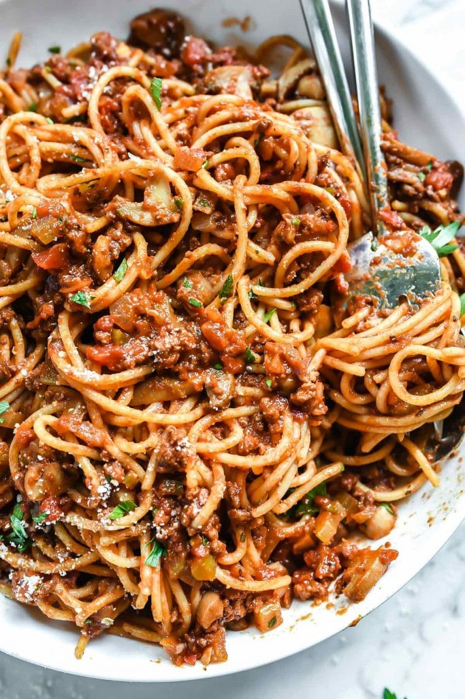

Spaghetti

Description
This sausage spaghetti has the flavor of spaghetti and meatballs,
without the hassle of making meatballs!
Ingredients
- 1 Tablespoon Olive Oil
- 2 Pounds Sweet Italian Sausage
- 1 Pound Fresh Mushroom Sliced
- 1 onion, chopped
- 1 Green Bell Pepper Chopped
- 1 Tablespoon, minced garlic
- 2 (28 ounce) Cans of Tomato Sauce
- 2 Tomatoes, diced
- 1 (6 Ounce) Can of sliced black olives, drained
- 1 Teaspoon dried oregano, or to taste
- 1 Teaspoon Dried Basil, or to taste
- Salt to taste
- 1 (16 oz) package of spaghetti or as needed
- 1/4 Cup Grated Parmesan Cheese, or to taste
Steps
- Heat olive oil in a large skillet over medium-high heat. Cook and stir sausage,
mushrooms, onions, green bell pepper, and garlic in hot oil until sausage is browned
and crumbly, about 20 minutes; drain and discard grease.
- Stir tomato sauce, diced tomatoes, tomato paste, and olives into sausage mixture.
season with oregano, basil, and salt. Simmer mixtures until flavors infuse, about 30 minutes.
- Bring a large pot of lightly salted water to a boil. Cook spaghetti in boiling water, stirring occasionally
until cooked through but firm to the bite, about 12 minutes. Drain and transfer to a serving bowl; top with
tomato-sausage sauce and Parmesan cheese.